Na Clínica Cois, você encontra um cuidado completo e humanizado para a saúde dos seus pés. Atendimento com material esterilizado, técnicas modernas de desbaste e correção, e orientações personalizadas para você caminhar sem dor e com bem-estar.
Agendar pelo WhatsAppProblemas como unhas encravadas, calos, fissuras no calcanhar e micose vão muito além da aparência: causam dor, comprometem a mobilidade e podem evoluir para complicações — principalmente em idosos e diabéticos.
A podologia da Clínica Cois une técnicas atraumáticas, instrumentais esterilizados e orientação preventiva para aliviar a dor já no primeiro atendimento e evitar que o problema volte.
Anamnese completa, exame clínico dos pés e plano de tratamento personalizado para o seu caso.
Higienização, desbaste, hidratação e orientações para manter os pés limpos, macios e saudáveis.
Remoção atraumática da espícula, curativo adequado e prevenção da recidiva com técnicas eficazes.
Desbaste seguro com instrumentais estéreis, aliviando a dor ao caminhar desde o primeiro atendimento.
Cuidado das fissuras, remoção da pele endurecida e hidratação profunda para recuperar o conforto.
Máscaras, cremes com ureia e emolientes para combater o ressecamento e restaurar a maciez da pele.
Limpeza e suavização das camadas queratinizadas, deixando os pés renovados e confortáveis.
Corte reto e adequado, sem cavar as laterais, prevenindo encravamentos e deformidades.
Assepsia, remoção cuidadosa das cutículas e preparo para uma esmaltação saudável e duradoura.
Regularização, desgaste e acompanhamento das unhas espessadas e deformadas para maior conforto.
Avaliação e cuidado de micoses, manchas e deformidades ungueais com orientação de tratamento.
Manutenção periódica que evita lesões, dores e infecções — aliada ideal da sua rotina de saúde.
Atenção especial à pele, unhas e mobilidade da terceira idade, com cuidado e paciência redobrados.
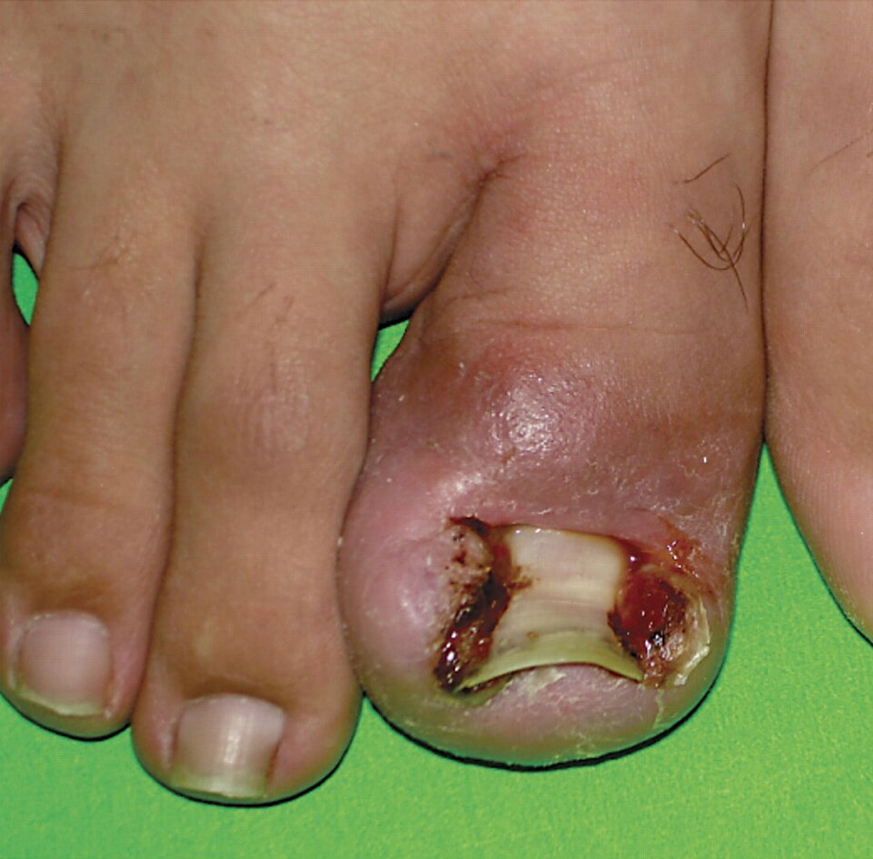
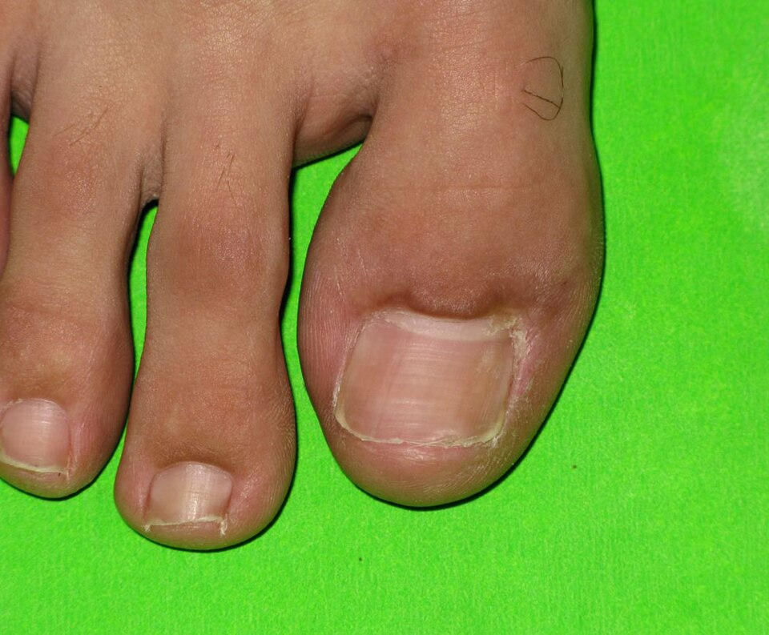
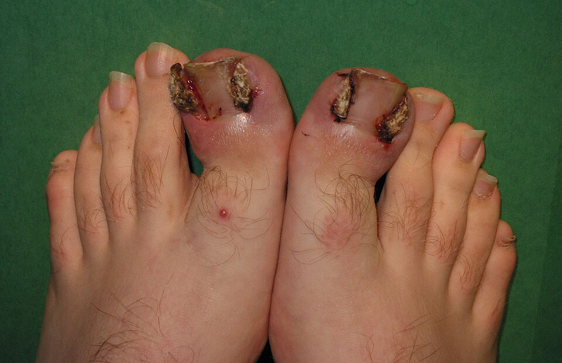
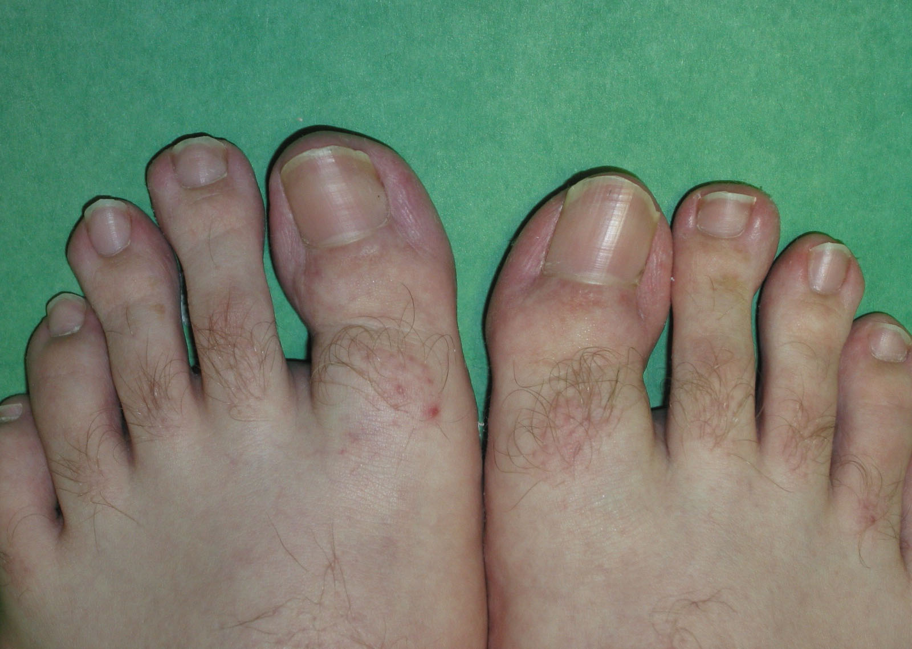
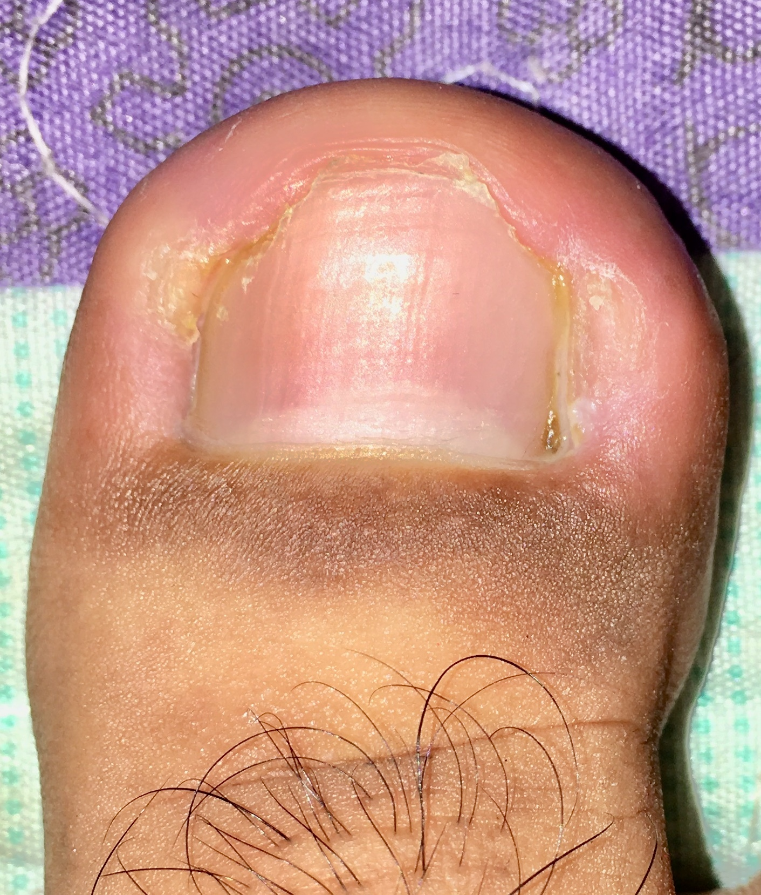
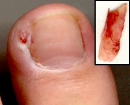
Imagens ilustrativas de casos clínicos. Os resultados podem variar de pessoa para pessoa.
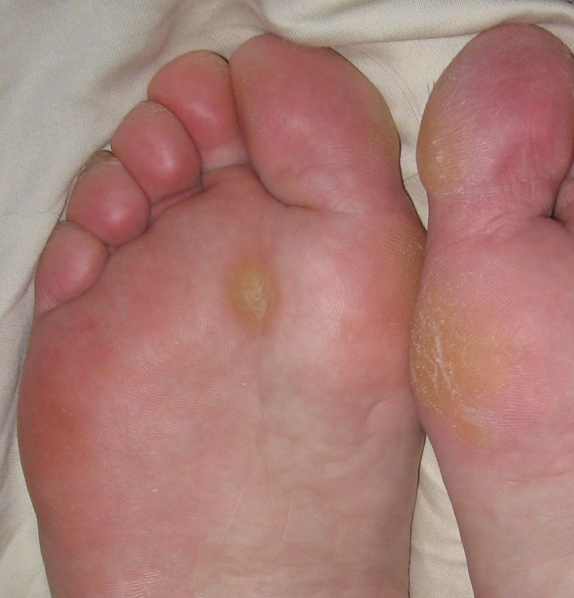
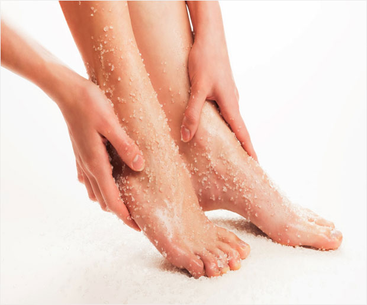
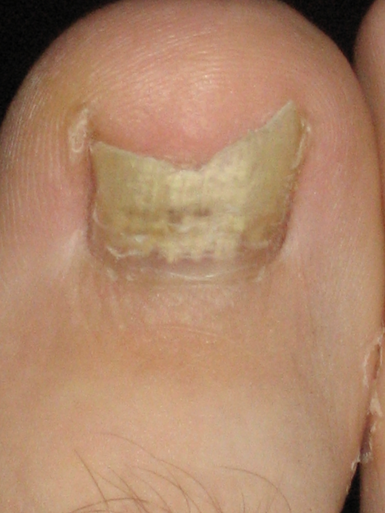
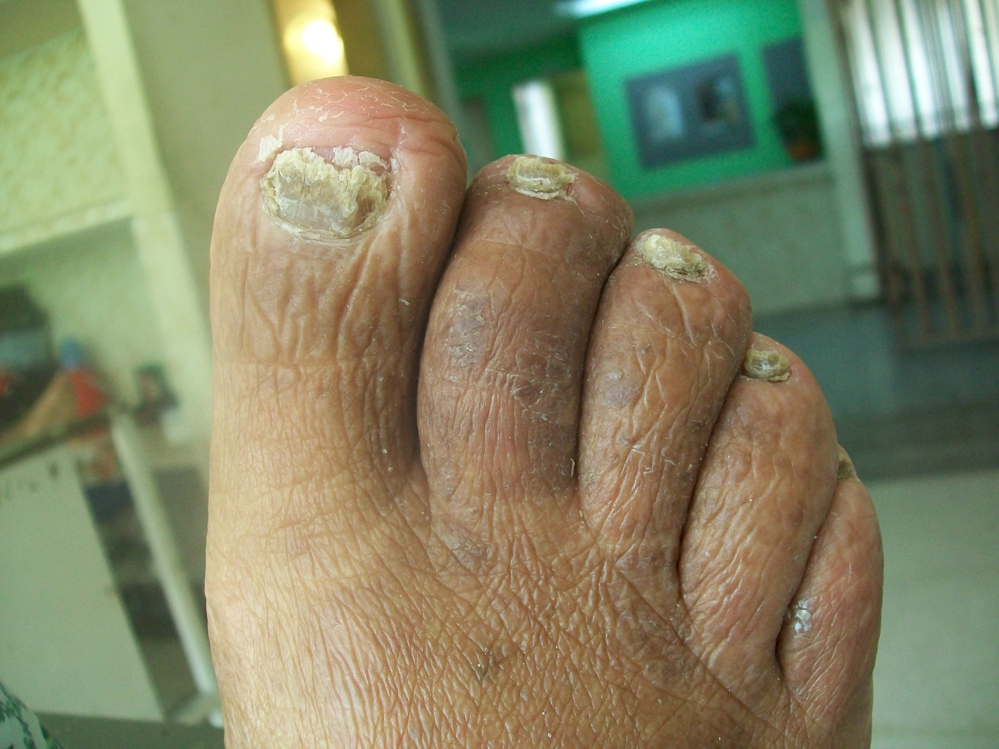
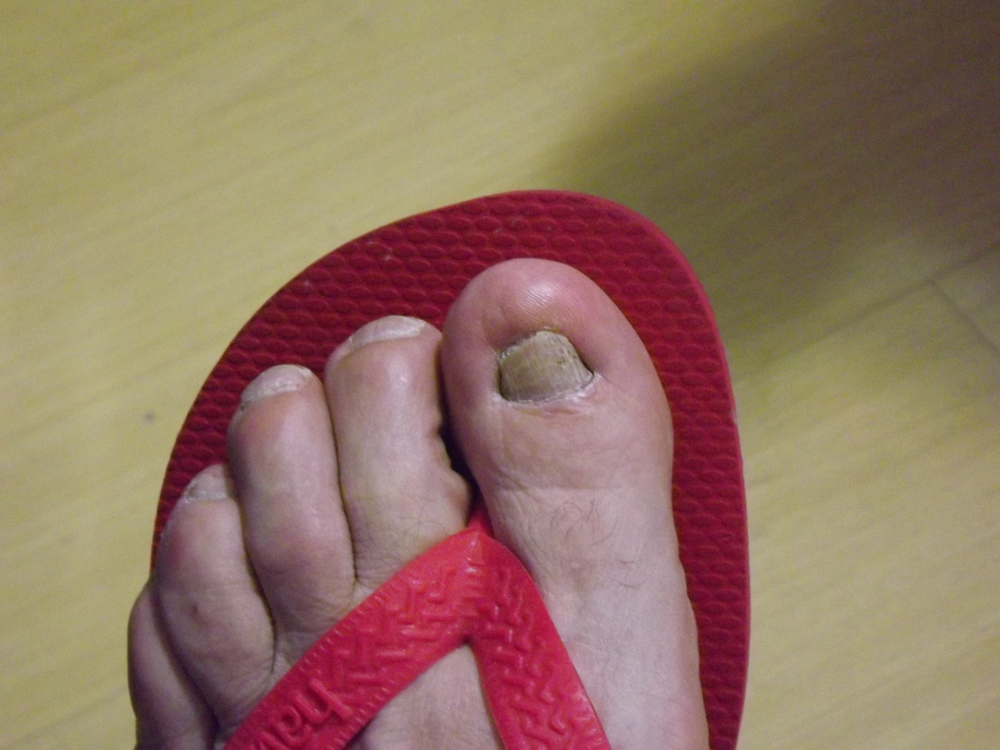
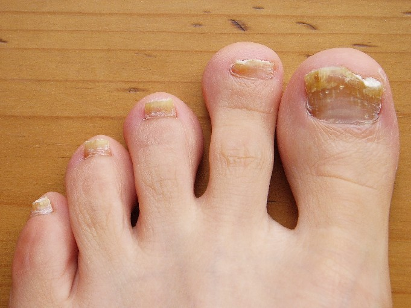
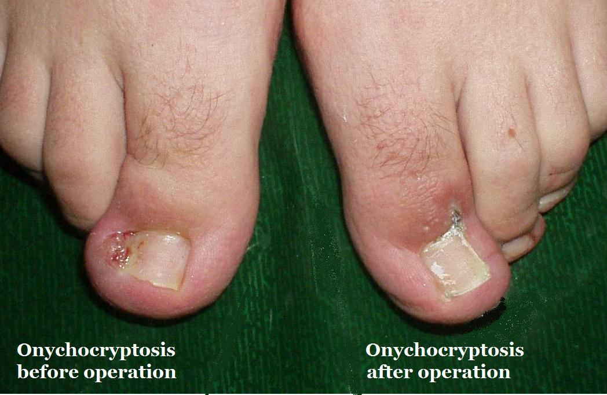
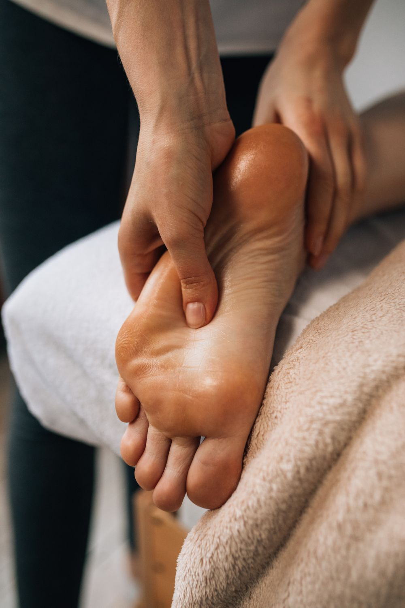
Massagem relaxante e hidratação profunda que renovam a pele e trazem bem-estar imediato.
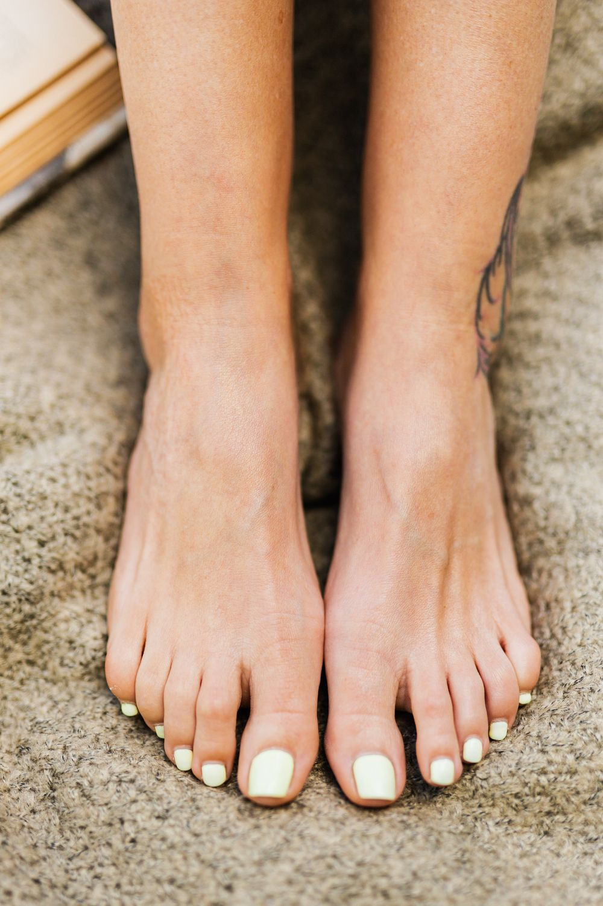
Manutenção regular que previne lesões, calos e encravamentos, mantendo seus pés sempre saudáveis.
Ambiente acolhedor, profissionais dedicados e um cuidado individualizado em cada sessão.
"Meu dedão estava inflamado e muito dolorido por causa da unha encravada. A podóloga foi super cuidadosa, não senti dor no procedimento e em poucos dias estava totalmente aliviado. Nada a ver com as tentativas caseiras que eu fazia!"
"Sempre sofri com calos e calosidades que doíam muito ao caminhar. O desbaste foi rápido, sem dor, e as orientações sobre calçados mudaram completamente meu dia a dia. Hoje agendo a manutenção todo mês."
"Minha mãe, de 78 anos, faz a manutenção dos pés aqui todos os meses. A equipe é muito atenciosa e paciente com ela. Melhorou muito o conforto e a mobilidade dela, e hoje ela caminha sem medo de dor."
"A micose que me incomodava há anos está finalmente sumindo. Além do cuidado com a podóloga, recebi orientações de higiene e prevenção que fizeram toda a diferença no resultado."
"Fiz a avaliação podológica completa e descobri que as minhas fissuras no calcanhar eram falta de hidratação profunda. Depois do tratamento, meus pés ficaram ótimos e o desconforto desapareceu."
"Profissionalismo de outro nível. Material esterilizado, ambiente limpo e acolhedor, e uma atenção enorme com o meu problema de unha encravada recorrente. Recomendo de olhos fechados."
Revisão da Cochrane concluiu que intervenções cirúrgicas e ungueais são mais eficazes que as não cirúrgicas na prevenção da recorrência da unha encravada, reforçando a importância do tratamento profissional.
Eekhof JAH et al. Cochrane Database Syst Rev. 2022; CD001541.Publicação médica orienta correção da técnica de corte das unhas, uso de calçados adequados e, nos casos recorrentes, procedimentos de correção, conforme aplicado na podologia.
Heidelbaugh JJ, Lee H. Am Fam Physician. 2009;79(4):303-8.Estudo clínico randomizado demonstrou que o desbaste realizado por podólogo elimina o calo na maioria dos casos e reduz a dor. Os calos podem afetar entre 14% e 48% da população.
Farndon L et al. J Foot Ankle Res. 2013;6:40.Revisão sistemática com meta-análise recente apontou altas taxas de resolução dos sintomas e baixa recidiva com as técnicas cirúrgicas para o tratamento da unha encravada.
J Foot Ankle Res. 2023; systematic review e meta-análise.Trate dores, lesões e desconfortos nos pés com quem entende do assunto. Fale agora mesmo com a Clínica Cois e dê o primeiro passo para caminhar com saúde e bem-estar.
Agendar pelo WhatsApp